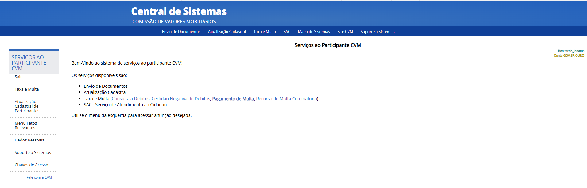
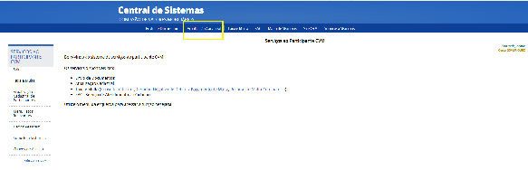
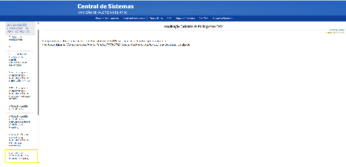
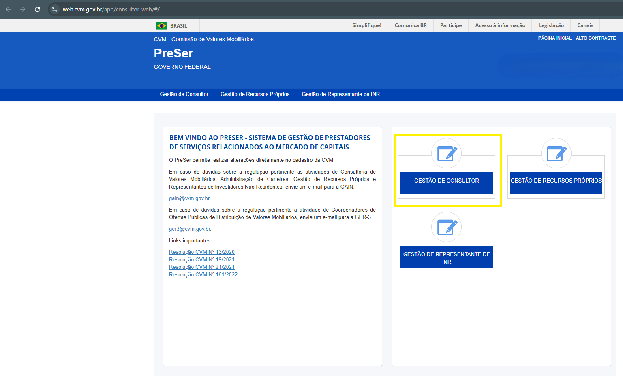
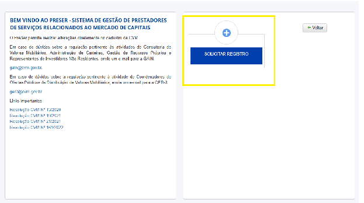
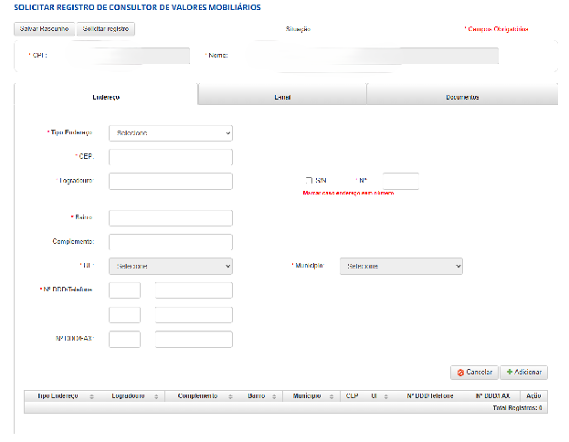
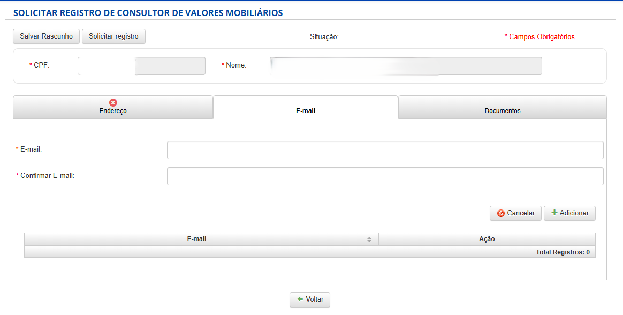
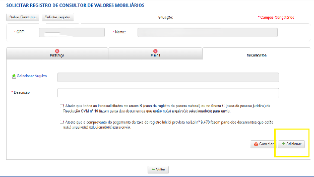
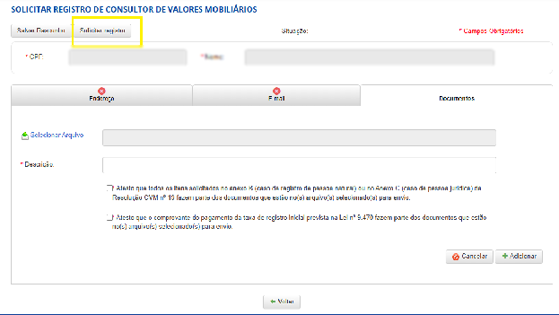

Como se registrar como Consultor de Valores Mobiliários
Um guia claro, do zero ao protocolo — Pessoa Física e Pessoa Jurídica
“Você cuida da sua preparação.
A AUVP Advisor te acompanha no caminho até o registro.”
Você faz o registro. A gente te ensina como fazer.
Edição 1 · Setembro de 2026
Resolução CVM nº 19/2021
Dez seções e um kit de modelos: do pré-requisito ao protocolo, e do protocolo à operação regular.
Antes de começar
Quem precisa do registro, consultor ou assessor, PF ou PJ, o que fica com cada um.
Descubra qual é o seu caminho
As duas trilhas, passo a passo, e a regra de ouro da PJ.
Separe os documentos antes de começar
A lista completa, quem prepara e onde a AUVP ajuda.
Vamos preencher juntos — o currículo (Anexo D)
Cursos, certificação e experiência, campo a campo.
Anexo D — três itens que costumam travar
Declaração do responsável, contingências e declarações adicionais.
Os anexos, em linguagem simples
Do Anexo A ao F: o que cada um significa.
Passo a passo no CVMWeb
A parte operacional, tela a tela, do acesso ao protocolo.
A AUVP Advisor ao seu lado
Orientação, preenchimento assistido, conferência e depois do registro.
Depois que o registro sair
Contrato, suitability e as obrigações para manter tudo em dia.
Pronto para protocolar?
O checklist final, antes e depois do registro.
Kit documental — modelos para preenchimento
Requerimento de habilitação, informações cadastrais e Formulário de Referência (Anexo D) com exemplos preenchidos.
O registro na CVM é o que permite você atuar de forma legal e independente. Este guia mostra o caminho inteiro — com calma e sem juridiquês — e deixa claro onde a AUVP Advisor caminha ao seu lado.
Toda pessoa ou empresa que vá orientar, recomendar e aconselhar clientes sobre investimentos, de forma profissional e independente. É uma atividade privativa de quem tem autorização da CVM.
Consultor
Resolução CVM 19
Assessor / AAI
Resolução CVM 178
Cancele o registro de assessor antes de pedir o de consultor. O consultor PF e os diretores de uma consultoria PJ também não podem manter registro de assessor.
Pessoa Física (PF)
Você atua em nome próprio
Pessoa Jurídica (PJ)
Você atua por meio de uma empresa
A AUVP Advisor
Você
Deixe isso claro desde o começo
O registro é feito pelo próprio interessado — é o seu nome no pedido. Nós orientamos, ensinamos e ajudamos a conferir, mas não protocolamos por você.
Você faz o registro. A gente te ensina como fazer.
As duas trilhas seguem a mesma lógica — mudam os documentos e o formulário. Escolha a sua e siga em frente.
Trilha 1
Como Pessoa Física
em nome próprio
Trilha 2
Como Pessoa Jurídica
uma empresa de consultoria
Uma consultoria PJ só existe se houver, no mínimo, um consultor PF já autorizado para a diretoria de consultoria. Por isso o caminho natural é registrar o sócio como PF primeiro — e só então a empresa.
Ter tudo organizado antes de entrar no sistema evita retrabalho. Use esta lista como mapa.
| Documento | Aplica-se | Quem prepara | AUVP ajuda |
|---|---|---|---|
| Diploma de curso superior | PF | Consultor | Conferência |
| Comprovante de certificação | PF | Consultor | Conferência |
| CPF e documento de identidade | PF | Consultor | Conferência |
| Informações cadastrais | PF e PJ | AUVP + consultor | Modelo pronto |
| Requerimento de autorização | PF e PJ | AUVP + consultor | Modelo pronto |
| Formulário de Referência | PF e PJ | AUVP + consultor | Modelo pronto |
| Contrato / estatuto social | PJ | Consultor / PJ | Orientação |
| GRU e comprovante de pagamento | PF e PJ | Consultor | Passo a passo |
O que mais gera dúvida já vem resolvido!
Requerimento, informações cadastrais e Formulário de Referência costumam travar o preenchimento. No fim deste guia há um Kit com os três modelos prontos — inclusive já preenchidos com exemplos — para você adaptar.
O item 3 do Anexo D é onde mais surgem dúvidas. A CVM quer conhecer sua formação, suas certificações e suas experiências dos últimos cinco anos. Veja campo a campo.
Não sabe o que colocar?
Se ficar na dúvida sobre o que escrever no currículo ou se uma experiência é relevante, a AUVP Advisor te orienta na organização das informações — campo por campo.
Um mapa rápido do que cada anexo significa. Os modelos em branco e preenchidos estão no Kit, ao final.
Em 2026 a ANBIMA reformulou a trilha de distribuição: CPA, C-Pro R e C-Pro I substituíram CPA-10, CPA-20 e CEA. A norma ainda cita a CEA; para o consultor, a certificação equivalente passou a ser a C-Pro I. Quem tinha CEA migra pela plataforma ANBIMA Edu.
Anexo B
Documentos da Pessoa Física
Anexo C
Documentos da Pessoa Jurídica
São o retrato do consultor (D, para PF) e da empresa (E, para PJ): identificação, escopo, currículo/estrutura, remuneração, contingências e declarações. No protocolo da PF valem os itens 1, 3, 5 e 6. O modelo preenchido está no Kit.
Usado apenas com investidores profissionais, para dar ciência de que a remuneração pode afetar a independência. Não se aplica a clientes de varejo.
A parte operacional. Cada passo mostra o print real da tela: siga a tela indicada e repare, em cada uma, onde clicar.
Acesse o sistema
Entre em sistemas.cvm.gov.br e escolha Sistema CVMWeb → Serviços ao Participante CVM.

Na aba superior, clique em “Atualização Cadastral”

Escolha o item “Consultor de Valores Mobiliários (Solicitar Registro)”

Abra “Gestão de Consultor”

Clique em “Solicitar Registro”
Inicie um novo pedido.

Preencha os dados
Informe os dados cadastrais (PF) ou os dados da empresa e do diretor consultor (PJ).


Anexe os documentos
Faça upload dos documentos do Anexo B (PF) ou Anexo C (PJ), incluindo a GRU e o comprovante, e ateste a consistência.

Revise e Protocole
Confira dados e anexos — inconsistências geram exigência.

Acompanhe
Você receberá um número de protocolo para acompanhamento. O registro produzirá efeitos em 5 dias úteis após o protocolo. Acompanhe pelo e-mail e pela consulta pública de participantes.
A AUVP Advisor te orienta durante o preenchimento, explica os documentos e ajuda a conferir se tudo está pronto para o protocolo.
Orientação
Explicamos cada etapa, do pré-requisito ao protocolo.
Preenchimento assistido
Mostramos o que colocar em cada campo.
Conferência
Revisamos seus documentos antes do envio.
Depois do registro
Acompanhamos a adesão, o treinamento e a configuração do ambiente.
Você faz o registro.
A gente te ensina como fazer.
O registro é feito pelo próprio interessado. Nós orientamos, ensinamos e ajudamos a conferir, mas não protocolamos por você.
Registro concedido é o começo da operação regular. O essencial para manter tudo em dia:
A prestação do serviço de consultoria só é regular com contrato escrito e prévio com o cliente e com a verificação de adequação (suitability) do produto ao perfil do investidor. Sem esses dois, não há prestação válida do serviço.
Obrigatório
Contrato com o cliente
Por escrito e prévio, antes de iniciar o serviço.
Obrigatório
Suitability
Verificar a adequação do produto ao perfil antes de recomendar.
Pronto para operar
Com o registro ativo, a AUVP Advisor te acompanha na adesão à plataforma, no treinamento e na configuração do ambiente de trabalho.
Só protocole quando todos os itens estiverem marcados.
Antes do protocolo
Pronto para o próximo passo?
Após a concessão do registro, a AUVP Advisor te acompanha na adesão à plataforma, no treinamento e na configuração do ambiente de trabalho.
Os três modelos que vocês usam, prontos para adaptar: requerimento, informações cadastrais e o Formulário de Referência (Anexo D) — este último já com exemplos preenchidos. Onde houver [colchetes] ou PREENCHER, coloque a sua informação.
Requerimento
Requerimento de Habilitação Profissional para Consultor de Valores Mobiliários — Resolução CVM nº 19.
Prezados Senhores,
Eu, , portador(a) do CPF nº , venho solicitar à Comissão de Valores Mobiliários (CVM) a habilitação profissional para a atividade de consultor de valores mobiliários, conforme a Resolução CVM nº 19/2021.
O tipo de pedido que submeto é por certificação, conforme previsto no regulamento em vigor. A presente solicitação é datada de .
Assino este requerimento como declaração do meu interesse na obtenção da habilitação profissional mencionada, e coloco-me à disposição para informações adicionais.
Atenciosamente,
· ·
Modelo de requerimento por certificação, conforme a Resolução CVM nº 19/2021.
Dados gerais
Endereço
Contatos
Modelo com exemplos preenchidos. Ajuste os textos conforme a sua atuação; onde estiver PREENCHER, complete com os seus dados. Data-base: última posição, atualizada até o último dia útil do mês anterior ao protocolo.
, inscrito(a) no CPF sob o nº .
“Prezados Senhores, declaro para os devidos fins que revi o formulário de referência aqui apresentado e que o conjunto de informações nele contido é um retrato verdadeiro, preciso e completo dos dados e informações necessários.”
Assinatura
Acrescente ou retire conforme a sua atuação.
Acrescente ou retire conforme a sua atuação.
Acrescente ou retire conforme a sua atuação.
Campos pessoais — preencha com o seu histórico:
| Empresa | Cargo e funções | Atividade principal da empresa |
|---|---|---|
Acrescente ou retire conforme a sua atuação.
Se houver processos ou condenações relevantes, descreva os fatos e valores.
O esperado é “Não há.” em todos os itens. Marque conforme a sua situação:
| 6.1) Acusações/punições nos últimos 5 anos (CVM, BCB, SUSEP ou PREVIC)? | NãoSim |
| 6.2) Condenação por crimes financeiros/contra a administração (transitada em julgado)? | NãoSim |
| 6.3) Impedimento de administrar seus bens por decisão judicial/administrativa? | NãoSim |
| 6.4) Consta como comitente inadimplente em mercado organizado? | NãoSim |
Com o registro ativo, a AUVP Advisor te acompanha na adesão à plataforma, no treinamento e na configuração do ambiente de trabalho.
Material educativo baseado na Resolução CVM nº 19/2021 (alt. Res. CVM nº 179/2023) e nos modelos fornecidos. Telas, prazos e valores de taxa podem mudar — confira as fontes oficiais da CVM antes de protocolar. Não constitui assessoria jurídica.
© 2026 AUVP. Todos os direitos reservados.